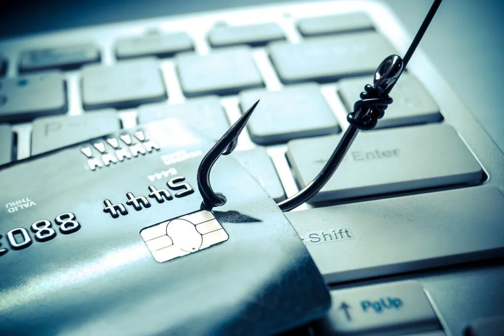
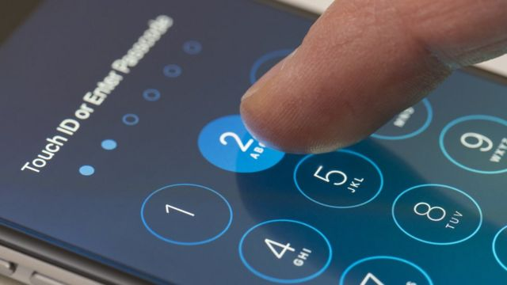
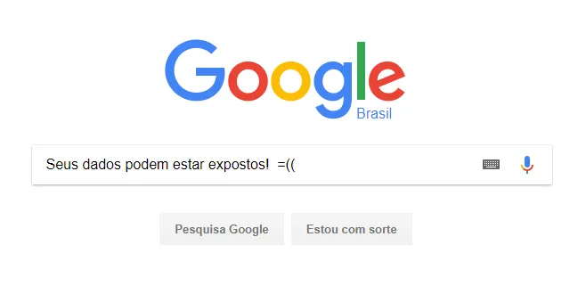

Vivemos em um mundo cada vez mais conectado e, com isso, proteger nossos dados pessoais se torna uma prioridade. A seguir, veja dicas práticas e essenciais para manter sua segurança na internet.
🔐 Crie Senhas Fortes

Sua senha é a primeira barreira contra invasores. Para torná-la mais segura:
* Use pelo menos 12 caracteres.
* Misture letras maiúsculas, minúsculas, números e símbolos.
* Evite usar nomes, datas de nascimento ou sequências óbvias.
* Nunca reutilize a mesma senha em diferentes contas.
* Considere usar um gerenciador de senhas.
✅ Ative a Verificação em Duas Etapas (MFA)
* Mesmo com uma senha segura, o ideal é ativar a autenticação de dois fatores:
* Após digitar a senha, você confirma a identidade com um código enviado por SMS, e-mail ou aplicativo (como Google Authenticator).
* Isso protege sua conta mesmo que sua senha seja descoberta.
⚠️ Cuidado com Phishing
* Phishing é um golpe digital para roubar seus dados. Pode vir por e-mail, SMS ou WhatsApp. Fique atento:
* Desconfie de mensagens com alertas como "Seu nome está no SPC" ou "Você ganhou um prêmio".
* Nunca clique em links suspeitos.
* Verifique sempre o remetente da mensagem.
* Empresas sérias não pedem senhas por e-mail.
🌐 Navegue com Segurança

* Antes de digitar qualquer informação em um site, veja se ele começa com https:// e exibe um cadeado no navegador.
* Evite redes Wi-Fi públicas para transações financeiras.
* Cuidado com sites que oferecem promoções “milagrosas”.
📱 Proteja Seu Celular
* Smartphones também precisam de proteção:
* Mantenha o sistema e os aplicativos atualizados.
* Baixe apps apenas de lojas oficiais (Play Store ou App Store).
* Use senhas para desbloquear.
* Revise as permissões dos apps antes de instalá-los.
* Não utilize Face ID ou Digital para desbloquear aplicativos de banco.
🤳 Redes Sociais com Segurança
* Ajuste as configurações de privacidade.
* Evite compartilhar dados pessoais como CPF, endereço ou rotinas.
* Só aceite amizades de pessoas conhecidas.
* Não clique em links enviados por estranhos.
🧠 Fique Sempre Atento
* A cibersegurança depende de hábitos simples, mas contínuos. Pratique a prevenção todos os dias e compartilhe essas dicas com amigos e familiares.